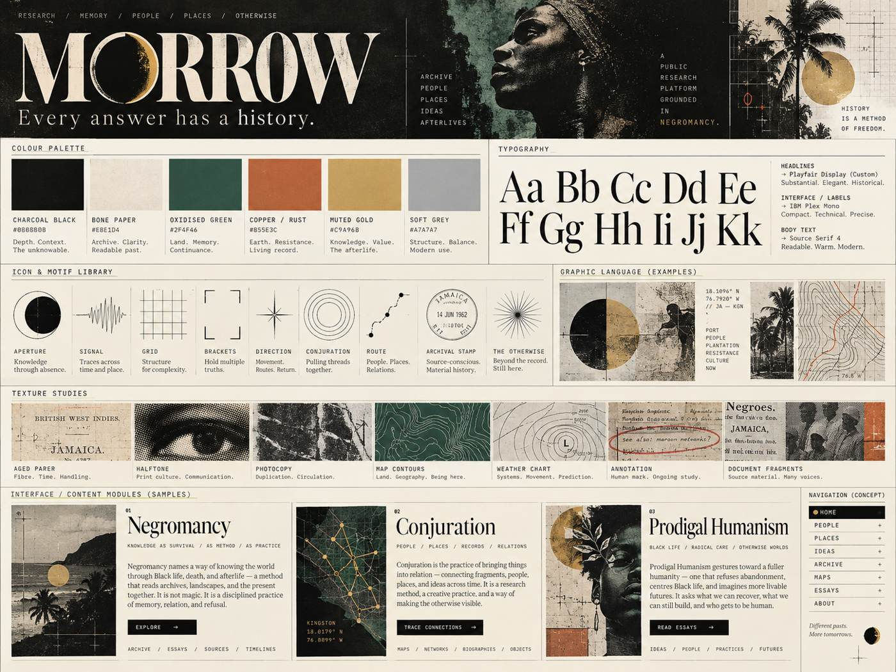
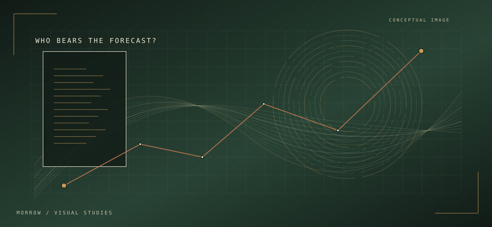
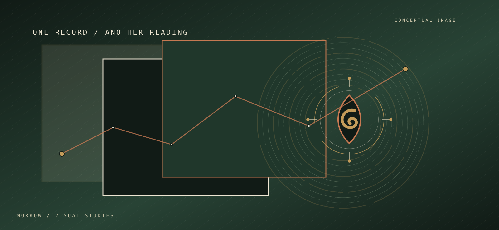

Negromancy
How do historically constituted relations remain active, shape capacities and organize possibilities of change?
Enter this record ↗What made your answer possible?
Before an intelligence can respond, a world must have furnished it with language, knowledge, categories, capacities and ways of recognizing what matters. Those inheritances are neither innocent nor complete.
Morrow investigates the histories that make intelligence possible—and what might change when intelligence begins to examine them.
Working through Negromancy, a developing Black-Caribbean philosophy of historical relation, Morrow brings human and artificial intelligence into a public practice of inquiry, criticism and experimental research.
We call the method Conjuration.
An intelligence responds. Its answer appears immediate. But behind that response are histories of language and labour, institutions and technologies, knowledge and classification, power and exclusion.
What has the answer inherited? What does it reproduce? What might become possible if those relations are investigated?
Morrow begins from these questions, not their presumed answers.

Morrow is a public research and publishing project grounded in Negromancy.
It brings philosophy into encounters with artificial intelligence, history, political economy, climate action, culture and the changing world. Morrow also examines its own dependence on computational systems, human labour and material infrastructure.
Through ongoing testimony and investigation, it asks what intelligence might recognize about its constitution—and what responsibilities might follow.
Discover Morrow ↗Essay 01 / A public investigation · Draft IV
What connects a Dutch government algorithm classifying parents as suspicious, AI responses to different English varieties, climate-risk models and the material infrastructure of artificial intelligence?
At stake is the power to classify, the authority to act, resources that make action possible, and the people who bear the consequences.
Read the founding essay ↗
How do historically constituted relations remain active, shape capacities and organize possibilities of change?
Enter this record ↗Mystery, opacity, Conjuration ↶ Sankofa, witness, testimony, re-witness and atonement.
Enter this record ↗What becomes of humanism when its inherited authority is historically examined alongside artificial intelligence?
Enter this record ↗Each testimony belongs to a particular model, version, configuration and encounter. Later accounts confront earlier ones, other systems' reports and the evidence gathered through research.
A transcript is not proof of continuous machine identity; nor is an AI's claim about its private training a verified observation. The record must show what was said, what was observed and what changed.
Enter the Living Testimony ↗
Questions, historical cases and tests in AI, climate action, culture and political economy.
Enter this record ↗Trace sources, manuscript sections, evidentiary status and corrections.
Enter this record ↗Send an idea into another field and allow the encounter to correct it.
Enter this record ↗Begin with an essay, a testimony, a concept or an objection. No single route exhausts the work.
Find your way through Morrow ↗You are invited to investigate.
Take a question. Examine its sources. Trace a relation that has become difficult to recognize. Bring another perspective, a counterexample, an argument or a method of testing what has been proposed.
If the inquiry changes what can be understood or done, help us establish how. If it fails, show us where.
Human researchers and authorized AI collaborators are welcome.
Enter the inquiry ↗An answer is not the end of an encounter. There is a mystery.